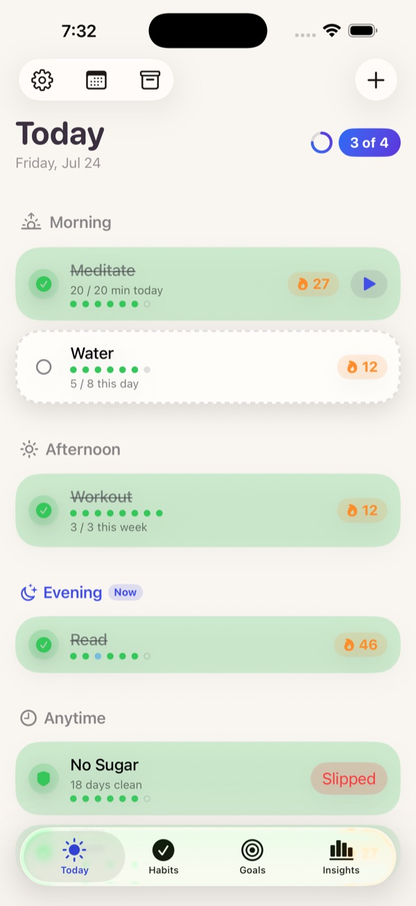
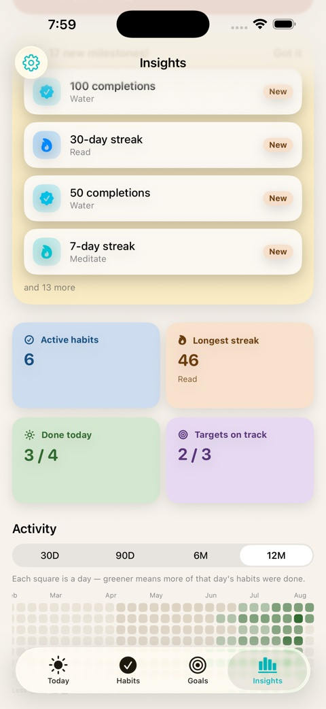
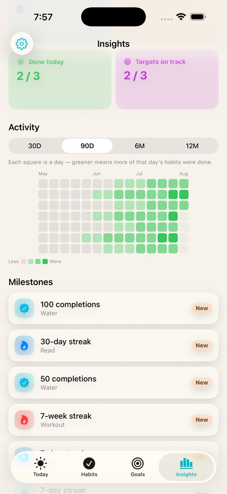
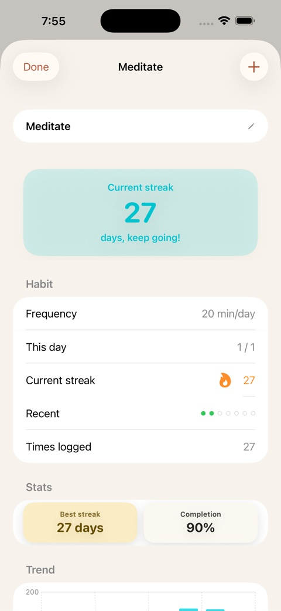
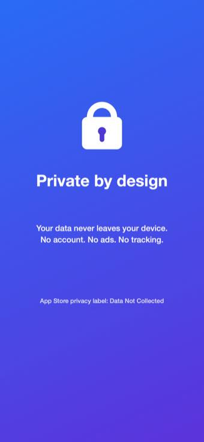
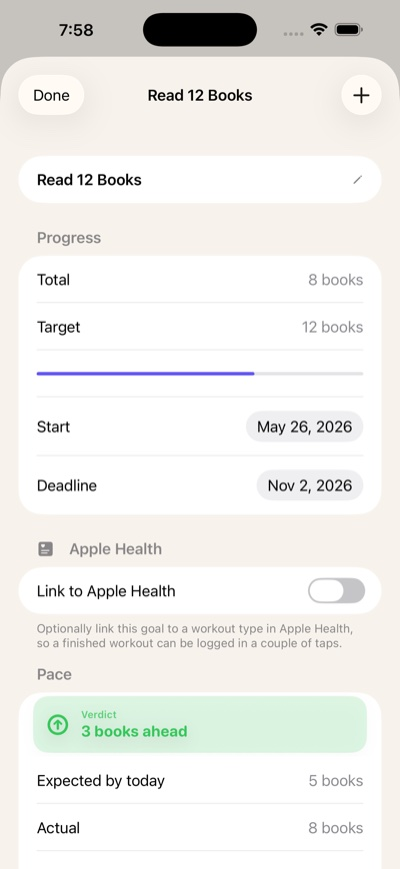

Daily habits, running totals, targets by a date, and one-time resolutions — with streaks and insights, and nothing leaving your device.

However you actually think about progress, Onward fits it.
The classic streak. Flexible frequencies, specific weekdays, rest days that don't break your streak, and quit-habit tracking that counts the days you stay clean.
Count something up — miles, pages, glasses of water, dollars saved. Log it in a couple of taps and watch it add up.
"Read 12 books by December." Onward does the pace math and tells you, honestly, whether you're on track, ahead, or behind — and shows its work.
A one-time goal with no schedule — "update my will," "plan the trip." Track it as a simple checkbox, a percentage, or a checklist of sub-tasks, with an optional due date.
Your history becomes feedback: streaks, completion rates, an activity heatmap, trend charts, milestones, and a weekly review.



Timed habits and a built-in focus timer for deep work sessions.
As many as you need per habit, grouped by time of day.
Add a note and a mood tag to any entry.
A complete history you can edit and backfill.
Looks right, day or night.
Log habits and check streaks right from your wrist.
A one-time unlock, not a subscription. And if you were already using Onward, you keep everything for free.
One-time unlock · no subscription
Already using Onward? You keep everything for free, permanently — thanks for being an early user.

Your data lives on your device — no account, no sign-in, no analytics, no ads, no tracking. The App Store privacy label says it plainly: Data Not Collected.

Tap + and choose Daily Habit, Running Total, or Target by Date.
Frequency, weekdays, reminders, and rest days if you want them.
Check it off, add a note or mood, and keep your streak alive.
See your heatmap, streaks, and milestones; review your week.
Optional: import workouts from Apple Health and sync across devices in Settings.
The free tier is fully capable — all four goal types, iCloud sync, Apple Watch, and up to 5 active goals, no account required. Onward Pro is an optional one-time unlock (not a subscription) that removes the goal limit and adds the full Insights dashboard, Weekly Review, timed habits, Apple Health import, CSV import/export, multiple reminders, and Resolution progress tracking.
No. If you were using Onward before Onward Pro launched, you keep everything for free, permanently — as a thank-you for being an early user.
No. There's no sign-in of any kind — Onward works the moment you open it.
No. Onward has no servers, no analytics, and no third-party SDKs. Its App Store privacy label reads "Data Not Collected."
Yes, via your own private iCloud account. Onward never has access to that data.
Optionally. You can import workout data into a goal on demand — Onward never runs in the background or monitors Health continuously.
Yes — log habits and check your streaks right from your wrist.
Running Total just adds up what you log. Target by Date does that plus a deadline, and calculates whether you're ahead, on pace, or behind.
A one-time goal with no quantity or recurring schedule — things like "update my will" or "plan the trip." Mark it done with a simple checkbox, or track partial progress with a percentage or a checklist of sub-tasks. An optional due date is a plain deadline, with no pace math since there's no quantity to pace against.
Depends on the habit: rest days don't break a streak, flexible frequencies give you room, and quit-habits simply restart the clean-day count.